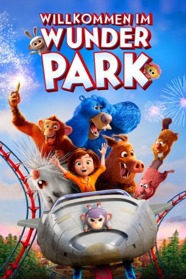

gesehen am 16.08.2019
gesehen am 16.08.2019Alternativ: Wonder Park (Englischer Titel) gesehen am 16.08.2019
 
 IMDB-Wertung: 5.8 / 10
IMDB-Wertung: 5.8 / 10  Tomatometer: 34
Tomatometer: 34  Metascore:
Metascore: 
Die zehnjährige, optimistische und kreative June (Stimme im Original: Sofia Mali / deutsche Stimme: Lena Meyer-Landrut) hat gemeinsam mit ihrer Mutter (Stimme im Original: Jennifer Garner) viel Zeit damit verbracht, einen fantastischen Modellpark voller spaßiger Fahrgeschäfte und sprechender Tiere zu bauen. Als ihre Mutter eines Tages im Krankenhaus landet, gibt June das geliebte, "Wunder Park" getaufte Projekt jedoch schließlich schweren Herzens auf. Doch schon kurz darauf stößt sie auf einer Waldlichtung auf ebenjenen Wunder Park – in Lebensgröße! Da dieser allerdings ziemlich heruntergekommen ist, ist June nun die Einzige, die dem Vergnügungspark wieder zu altem Glanz verhelfen kann. Aber dazu braucht sie wiederum selbst Hilfe und findet diese zum Glück in den Tieren, die im Freizeitpark leben.
Jahr: 2019
Dauer: 85 Minuten
FSK: 0
Land: Spanien Studio: Paramount PicturesTonspuren: DD5.1 - ,
Untertitel: Deutsch,
Auflösung: 1080p (1920x800) Größe: 3553 MB
Genre: Komödie, Abenteuer, Fantasy, Animation/Trick, Familie
Regisseur: Dylan Brown
Drehbuch: Josh Appelbaum, André Nemec, Robert Gordon, Josh Appelbaum, André Nemec
Soundtrack: Steven Price
Darsteller:
 Mila Kunis als Greta
Mila Kunis als Greta Ken Jeong als Cooper
Ken Jeong als Cooper Norbert Leo Butz als Peanut
Norbert Leo Butz als Peanut Matthew Broderick als Dad
Matthew Broderick als Dad Kevin Chamberlin als Uncle Tony
Kevin Chamberlin als Uncle Tony Kath Soucie als Bus Counselor Shannon
Kath Soucie als Bus Counselor ShannonDatei: X:\Kinder Filme (N-Z)\Willkommen im Wunder Park (2019, FSK0, 1920x800).mkv seit 16.08.2019
Festplatte: Kinder-Filme+Trick
 Es gibt insgesamt 87 Filme in der Gruppe 'Kinder Filme (N-Z)'
Es gibt insgesamt 87 Filme in der Gruppe 'Kinder Filme (N-Z)'